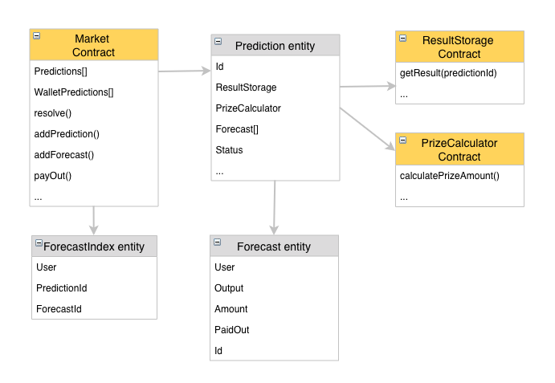

Prediction Market structure¶
Blockchain Part¶
Full view:
Market Contract¶
The main contract will be Market contract which holds:
- AIX Balance of all predictions
- All actions Events
- Available predictions list
- Participants forecasts details
Prediction
The entity holds all participants forecasts and addresses to ResultStorage, PrizeCalculator. Full Entity structure:
- id - 32 symbols hash
- forecastStartUtc - Start date when Prediction starts to accept forecasts.
- forecastEndUtc - End date until which prediction accept forecasts
- fee - Each prediction can have a fee.
- status -
- NotSet (0)
- Published (1) - prediction is ready for market. Initial status.
- Resolved (2) - prediction winning outcome is known and payouts are ready.
- Paused (3) - participation in this predictions is paused and administrators are investigating what is happening
- Canceled (4) - some issue happened and refunds for this prediction participants will happen.
- outcomesCount - number how much outcomes are available
- resultOutcome - outcome index which won prediction. Start from 1.
- forecasts - an array of participants forecasts:
- id - 32 symbols hash
- user - forecast owner wallet address
- amount - forecast size in AIX tokens
- outcomeId - forecast selected outcome index
- paidout - if the prediction is canceled or forecast won - an amount which was paid for user
- outcomeTokens - array with information how much tokens has each outcome index
- initialTokens - a number of tokens which was transferred by an organizer
- totalTokens - prediction tokens amount
- totalForecasts - forecasts participated in this prediction count
- totalTokensPaidout - total tokens paid out after resolving
- resultStorage - result oracle contract address
- prizeCalculator - prize calculator formula contract address
Market functions
- initialize - market owner setup market
- addPrediction - owner can add prediction and update in case of issue
- changePredictionStatus - [emergency function] owner can pause prediction when something wrong happened
- resolve - prediction resolving function will be called after oracle knows prediction winning outcome id.
- payout - function dedicated for winning payouts to take theyr rewards
- refundUser - [emergency function] - owner can refund forecast to owner in case of issue.
- refund - if prediction was canseled users using this function will get refund.
- receiveApproval - AIX token will call this function to setup user forecast
View functions are used, because of current solidity limitations
- getForecast - ability to read forecast details
- getOutcomeTokens - ability to know each outcome collected money
Safety functions
- withdrawETH - withdraw all ethers in case something wrong will be found
- withdrawTokens - withdraw all tokens in case something wrong will be found
- pause - pause market in case something wrong will be found
Prize calculator contract¶
This contract stores formula how much participant can withdraw when his selected output wins.
Function to calculate win amount:
- calculatePrizeAmount
At first version we use simples prize distribution formula:
Your contributed tokens (_forecastTokens) * _predictionTotalTokens / _winOutputTotalTokens = prize
Example:
A prediction has 2 different outcomes (Outcome 1, Outcome 2) and initial 2000 tokens prize:
User A placed 100 tokens on Outcome 1
User B placed 300 tokens on Outcome 1
User C placed 100 tokens on Outcome 2
Total contributed tokens: 2500
After the prediction resolves, the Oracle decides the winning outcome is Outcome 1.
Users can now withdraw the following token amount from their forecasts:
User A -> 100 * 2500 / (100 + 300) = 625 Tokens
User B -> 300 * 2500 / (100 + 300) = 1875 Tokens
User C -> 0 tokens
Result Storage contract¶
This contract store all predictions resolutions. The contract will be connected with our oracle service which will solve predictions. At this moment 3rd party services like http://www.oraclize.it/ are not stable, have limited support, expensive and execution flow is not traceable. When we allow users to create predictions by themselves this part becomes extremely complex and we think that this functionality is a key feature. Having own oracle service will be much flexible solution and in the future, this solution can act as a proxy to better 3rd party oracles.
Platform Part¶
Platform API:¶
REST api service for other applications. Users can use to integrate with the platform. Addresses can be found at developers wiki page https://aigangnetwork.github.io/
Platform WEB:¶
Aigang team maintainable web interface working on top of REST API.
Background services:¶
Aigang.Predictions.Listener service - helps to maintain prediction statuses. One of jobs example is - older than 24 hourse draft forecasts will be deleted.
Aigang.Transactions.Listener service - helps to maintain blockchain transactions statuses. Example: when forecast receives payment transaction this service activate forecast and update status to “Paid”.
General prediction statuses in platform:¶
- PendingPublish (6) - Prediction is created and waiting for activation.
- Published (1) - prediction is ready for market. Initial status.
- PendingResolve (5) - Forecasting is ended and waiting for resolving.
- Resolved (2) - the prediction winning outcome is known and payouts are ready.
- Paused (3) - participation in this predictions is paused and administrators are investigating what is happening
- Canceled (4) - some issue happened and refunds for this prediction participants will happen.
General forecast statuses in platform:¶
- Draft (1) - initial forecast status.
- PendingPayment (2) - forecast payment was initialized.
- Paid (3) - payment was received and forecast is active.
- Canceled (4) - forecast is ended.
- Won (5) - forecast output index was actual event.
- Lost (6) - forecast lost.
- WonPaidout (7) - forecast is ended and payout is sent.
- AvailableRefund (8) - prediction is canceled and you can refund your tokens.
- PendingPayout (9) - payout transactions was submited and platform is waiting until it will be commited.
- RefundPaidout (10) - refund was successful and tokens was sent to user.